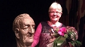
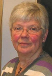

Gunda Linnéa Karlsson Lundström
Bonde, sjukvårdsbiträde, bygde- och släktforskare.
| Född: | 1943-06-03 Bursiljum, Svarttjärn, Burträsk fs, Burträsk sn. [1] |
|---|
| Änka: | 2005-04-21 Bygdeträskliden 37, Burträsk, Burträsk fs, Skellefteå kn. [2] |
|---|
| Levde: | 2012 Bygdeträskliden 37, Burträsk, Skellefteå kn. [3] |
|---|
| Vigsel: | 1965-11-07 Burträsk fs, Burträsk kn. [2] |
|---|
| Levde: | 1971 Bygdeträsk, Burträsk fs, Burträsk kn. [4] |
|---|
| Levde: | 1981 Bygdeträsk 22:1, Bygdeträskliden 37, Burträsk, Burträsk fs, Skellefteå kn. [5] |
|---|
| Levde: | 1991 Bygdeträsk 22:1, Bygdeträskliden 37, Burträsk, Burträsk fs, Skellefteå kn. [6] |
|---|
| Barn: |
|---|
| Anna Maria Lundström (1966 - ) |
| Lena Sofie Lundström (1968 - ) |
| Stina Ida Elisabeth Lundström (1982 - ) |
Noteringar
Böcker
Bygdeträsk - från Gustav Vasa till 1989,, Red. Gunda Lundström, 1990
Bygdeträsk Kulturförening
Kvarnbyn Västanträsk med omnejd 1539-1996, Red. Gunda Lundström, Bygdeträskliden, 1996
Kvarnbyn och Västanträsk studiegrupper
Innansjön med omnejd 1539-1999, Red. Gunda Lundström Bygdeträskliden, 1999
Innansjöns studiegrupp
Villvattnet med omnejd 1539-2004, Red. Gunda Lundström, Bygdeträskliden, 2004
Villvattnets bokgrupp
Gunda har framför allt bidragit med forskningsmaterial från den äldre tiden från 1500-talet och framåt, men också medverkat i det redaktionella arbetet med ovanstående bygdeböcker.
Gunda har i början av 2018 gett ut Bönder och gårdar i Burträsk socken 1539-1727(1750) del 1(3)
som pdf-filer. Det gäler byarna: Andersvattnet, Bodbyn, Bursiljum, Bygdeträsk, bilagor till boken Bygdeträsk från Gustav Vasa till 1989, Bygdsiljum, Gammelbyn (Burträsk), Kalvträsk, Lappvattnet, Mora, Skarviken, Skarberget, Svedjan, Västomsundet, Tallträsk, Åbyn.
Priser och utmärkelser
Ernst Westerlundpristagare 2011, 10.000 kr.
från Ernst Westerlundsstiftelsen.
"Priset för förtjänstfull lokalhistorisk insats delades ut av Norrans VD Anders Vestermark till Gunda Lundström Bygdeträskliden. Hon blev årets Ernst Westerlundpristagare. Forskning i 30 år om byarna kring Göksjön och stora Bygdeträsket har hon åstadkommit. Detta har hon samlat i fyra böcker.
Stefan Viklunds minnespris 2007
från styrelsen i (Skelelftebygdens Släktforkare
"Gunda har varit en aktiv släkt- och hembygdsforskare under närmare 20 år och har gjort en stor insats genom att dokumentera och ge ut 4 böcker om Burträskbyden. Hon är också den drivande kraften bakom släktforskarlokalen i Burträsk som drivs i samarbete med Skelleftebygdens Släktforskare. Hon har även hållit i släktforskarkurser i Burträsk sedan omkring 1990 och bedriver även kulturarbete med skolklasser i Burträsk. "
Personhistoria
| Årtal | Ålder | Händelse |
|---|
| 1943 |
|
Födelse 1943-06-03 Bursiljum, Svarttjärn, Burträsk fs, Burträsk sn [1] |
| 1944 |
1 år |
Systern Elly Elida Karlsson föds 1944-08-22 Bursiljum, Svarttjärn, Burträsk fs, Burträsk sn [4] |
| 1946 |
2 år |
Systern Signe Ingegerd Karlsson föds 1946-05-16 Bursiljum, Svarttjärn, Burträsk fs, Burträsk sn [4] |
| 1948 |
4 år |
Brodern Folke Henry Karlsson föds 1948-05-31 Bursiljum, Svarttjärn, Burträsk fs, Burträsk sn [4] |
| 1950 |
6 år |
Brodern Olof Signar Karlsson föds 1950-04-03 Bursiljum, Svarttjärn, Burträsk fs, Burträsk sn [4] |
| 1952 |
8 år |
Brodern Karl Gunnar Andreas Karlsson föds 1952-03-29 Bursiljum, Svarttjärn, Burträsk fs, Burträsk sn [4] |
| 1955 |
12 år |
Brodern Kent Elmer Karlsson föds 1955-09-08 Bursiljum, Svarttjärn, Burträsk fs, Burträsk sn [4] |
| 1965 |
22 år |
Vigsel Hans Per-Olov Lundström 1965-11-07 Burträsk fs, Burträsk kn [2] |
| 1966 |
22 år |
Dottern Anna Maria Lundström föds 1966-02-28 Bygdeträskliden 37, Burträsk, Burträsk fs, Burträsk kn [4] |
| 1968 |
25 år |
Dottern Lena Sofie Lundström föds 1968-10-12 Bygdeträskliden 37, Burträsk, Burträsk fs, Burträsk kn [4] |
| 1971 |
|
Levde Hans Per-Olov Lundström 1971 Bygdeträsk, Burträsk fs, Burträsk kn [4] |
| 1980 |
37 år |
Fadern Erik Signar Karlsson dör 1980-10-14 Svarttjärn, Burträsk, Burträsk fs, Skellefteå kn [7] |
| 1981 |
|
Levde Hans Per-Olov Lundström 1981 Bygdeträsk 22:1, Bygdeträskliden 37, Burträsk, Burträsk fs, Skellefteå kn [5] |
| 1982 |
38 år |
Dottern Stina Ida Elisabeth Lundström föds 1982-02-12 Bygdeträskliden 37, Burträsk, Burträsk fs, Skellefteå kn [6] |
| 1985 |
42 år |
Modern Gerda Linnéa Lindahl dör 1985-07-30 Björnåkersg 12, Burträsk, Burträsk fs, Skellefteå kn [8] |
| 1991 |
|
Levde Hans Per-Olov Lundström 1991 Bygdeträsk 22:1, Bygdeträskliden 37, Burträsk, Burträsk fs, Skellefteå kn [6] |
| 1999 |
55 år |
Brodern Ture Markus Karlsson dör 1999-04-10 Anderstorg 16 /427, Skellefteå lfs, Skellefteå kn [9] |
| 2005 |
61 år |
Änka 2005-04-21 Bygdeträskliden 37, Burträsk, Burträsk fs, Skellefteå kn [2] |
| 2005 |
61 år |
Makan Hans Per-Olov Lundström dör 2005-04-21 Bygdeträskliden 37, Burträsk, Skellefteå kn [2] |
| 2012 |
|
Levde 2012 Bygdeträskliden 37, Burträsk, Skellefteå kn [3] |
Dokument
Källor
| [1] | SCB Födda AC 80/1943, Mtl Västerbottens län 1971 |
| |
| | |
| [2] | man91 / RFV 06 |
| |
| | |
| [3] | https://www.ratsit.se/sok/avancerat/person |
| |
| | |
| [4] | Mtl Västerbottens län 1971 |
| |
| | |
| [5] | Mtl Västerbottens län 1981 |
| |
| | |
| [6] | Mantalslängd 1991, Västerbottens län |
| |
| | |
| [7] | RTB 80 / SPAR 90 |
| |
| | |
| [8] | RTB 85 / SPAR 90 |
| |
| | |
| [9] | RTB 99 |
| |
|
|  |
2011-11-13. Idag delades årets Ernst Westerlund-pris ut. Det blev Gunda Lundström från Bygdeträskliden, Burträsk som fick priset.
Gunda har hållt på med släktforskning och hembygdsforskning i över 30 år.
Ernst Westerlund-priset är på 10 000 kronor och delas ut till den som gjort goda insatser i lokalhistorisk forskning.
www.svt.se/2.33919/1.2601272/gunda_prisades
|
| |
|  |
Gunda Lundström, sekr. i styrelesen för Skelleftebygdens släktforskare.
"Sedan 1982 är jag byaforskare i Burträsk, främst området runt Göksjön och Stora Bygdeträsket, vilket resulterat i böckerna Bygdeträsk från Gustav Vasa till 1989, Kvarnbyn- Västanträsk med omnejd 1539-1996 och Innansjön med omnejd 1539-1999. Är numera släktforskare och handledare i släktforskning. "
skelleftebygdens-slaktforskare.se/gunda.htm
|
|
{kind=link}
{kind=link}